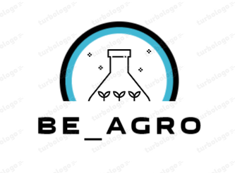

<section class="about_section layout_margin-bottom">
    <div class="container">

        <div class="row">
            <div class="col col-lg-12 img-box">
                
            </div>
        </div>
        <div class="row change">
            <div class="col">
                <div class="detail-box">
                    <div class="heading_container">
                      <h2>
                        <span>Be_Agro</span>
                      </h2>
                    </div>
                    <p>
                      Nuestro proyecto pretende mejorar las condiciones de cultivo de arroz y contribuir con el desarrollo del agricultor colombiano, por medio de herramientas
                      tecnologicas.<span>Be_Agro</span> surge como una necesidad para aportar al medio ambiente un desarrollo sostenible, Capaz de minimizar el consumo de agua en los
                      cultivos de arroz hasta en un 60% por medio de la idea de cultivos de arroz en seco. Lo que permite llevar un control por medio de plataformas de informacion, las cuales
                      se apoyan con la interaccion directa de los componentes fisicos que se encuentran en el cultivo.
                    </p>
                    <br>
                    <p>
                        Esta idea consigue un sistema de riego automatico de ciclo cerrado por lo que se cataloga como un sistema retroalimentado por variables de entorno fisico, gracias a la interaccion directa
                        de sensores expuestos en el cultivo. El riego del cultivo de arroz se hace de forma subterranea sin la necesidad de inundacion proporcionando a la planta la cantidad requerida
                        de humedad y evitando la perdida de agua debido a las altas temperaturas presentes en las regiones de colombia por evaporacion.
                    </p>
                  </div>
            </div>
        </div>

    </div>
  </section>